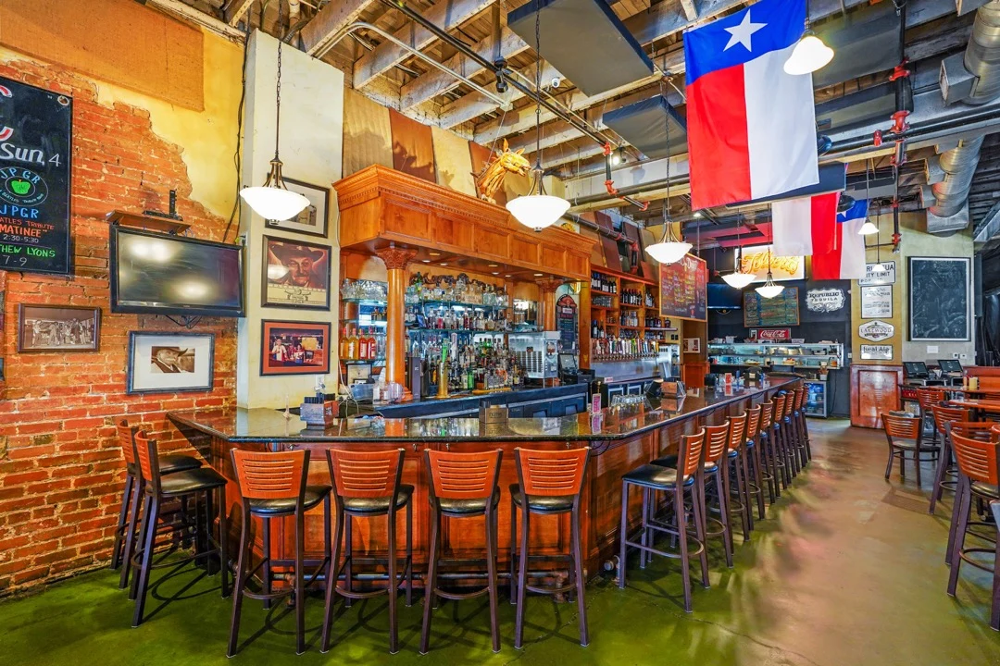

Inside the chili parlor.
FROM THE TEXAS FILES
A newspaperman.
A chili parlor.
A Texas story.
Frank X. Tolbert was a newspaperman, a storyteller, and a champion of Texas chili. He wrote A Bowl of Red and helped launch the first Terlingua chili cook-off in 1967.
In 1976, Frank and his son opened Tolbert’s in Dallas. In 2006, his daughter Kathleen and her husband Paul Ryan brought the family tradition to Grapevine’s Main Street.
The setting has changed. The family’s Bowl of Red recipe lives on.
1967Terlingua’s first cook-off
1976The Dallas original
2006At home in Grapevine